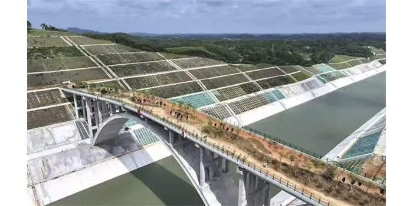

01 - 一座为动物建的桥
A Bridge Built for Animals

在广西，平陆运河刚刚建成。运河打通之后，当地的交通变得比以前方便很多，运送货物也更快更多了。人们注意到，在运河上有一座特别的桥，它没有坚硬的路面，也没有路灯，它连接的不是村庄，而是两边的大山。原来，这是一座专门为动物建的桥。有了这座桥，运河两边的树林和草地不再被分开，动物的活动路线不会被完全切断，它们仍然可以找到食物，繁殖后代。 在运河开始使用的时候，这座动物桥也建好了。桥全长约240米，宽20米，整座桥都按照原来山里的树林的环境来设计，非常适合狐狸、野猫、松鼠等动物的生活。为了让桥看起来和山地的环境一样，设计师们把桥的两边和山连接的地方做得特别宽，上面种满了和周围一样的树和草，还有动物们喜欢的各种果树。甚至连泥土都是从同一座山挖去的。几个月过去了。我们看到桥上的树木开始长高，最近，桥上开始出现动物的脚印。看来是“甲方”过来验收了。不久我们将会看到，船在桥下开过，动物在桥上跑动。